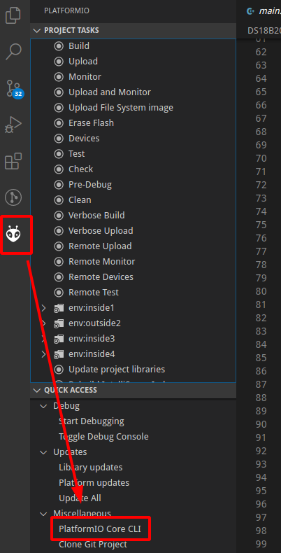

Когда компилируется код в PlatformIO, в консоль не показываются команды, которые используются для компиляции. Чтобы их увидеть, надо сделать следующее.
Надо войти в терминал, который называется PlatformIO CLI. Причем надо войти в такой терминал, который принадлежит текущему проекту. Для этого надо выбрать какой-нибудь исходный файл того проекта, для которого нужно получить PlatformIO CLI. Далее надо нажать на крупную иконку PlatformIO в левой части IDE. Далее надо развернуть Quick Access - Miscellaneous, и выбрать пункт PlatformIO Core CLI.

В терминале надо дать команду:
pio run -v
В результате запустится компиляция прошивки, причем будут видны все используемые команды сборки.